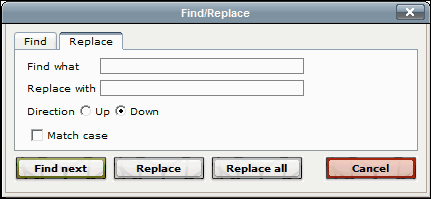
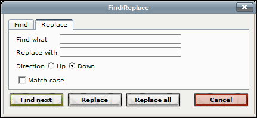

Find and Replace Buttons 
| Button | Function |
 |
Opens the Find/Replace dialog to the Find tab. This tab enables you to find a string in the editor. |
 |
Opens the Find/Replace dialog to the Replace tab. This tab enables you to find and replace a string in the editor. |
Find and Replace Dialog
 >
>
To Find a String
- Insert your cursor somewhere in the text. Your cursor's position indicates the point where the search will begin.
- Click to open the Find tab.
- Enter the string you want to find in the Find What field.
- For Direction: choose Up if you want to search up from your cursor insertion point; choose Down if you want to search down from your cursor insertion point.
- Check Match case if you only want to find strings that match the case of the string you have entered.
- Click [Insert]. If the find mechanism finds your string (in the Direction that you have entered) your cursor now highlights the string.
- You can continue to click [Insert] to find the next string that matches your Find What string. When the find mechanism can no longer find a matching string, it displays a dialog telling you that the string cannot be found.
To Find and Replace a String
- Insert your cursor somewhere in the text. Your cursor's position indicates the point where the find and replace process will begin.
- Click to open the Replace tab.
- Enter the string you want to replace in the Find What field.
- Enter the string you want to replace it with in the Replace with field.
- For Direction: choose Up if you want to proceed up from your cursor insertion point; choose Down if you want to proceed down from your cursor insertion point.
- Check Match case if you want to find strings that match the case of your Find What string and replace them with strings that match the case of your Replace with string.
- Click [Find next]. If the find mechanism finds your string (in the Direction that you have entered) your cursor now highlights the string.
- If you want to replace the text in the string, click [Replace].
If you do not want to replace this instance of the string, click [Find next]. When the find mechanism can no longer find a matching string, it displays a dialog telling you that the string cannot be found.
If you want to replace all occurences of the Find What string, click [Replace all] at any point. All instances of the Find What string in the text are replaced, whether or not they are positioned above or below the cursor.